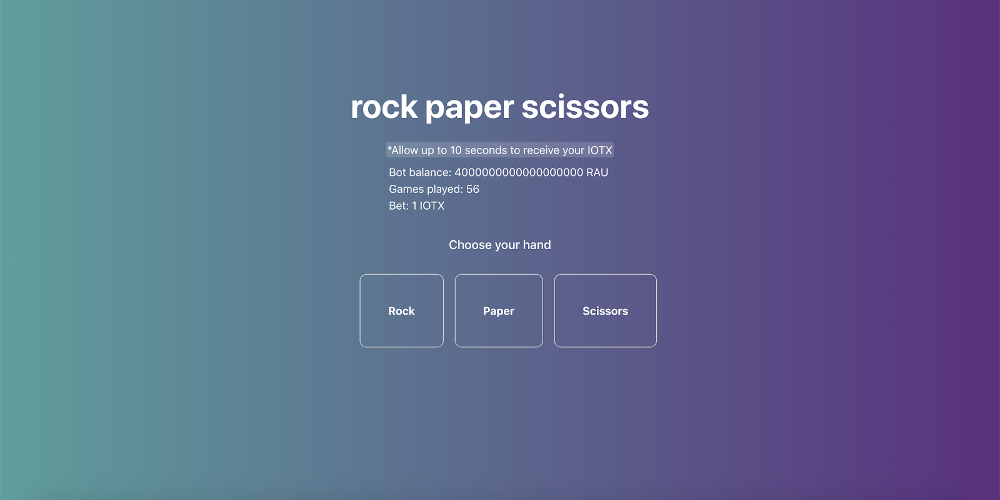
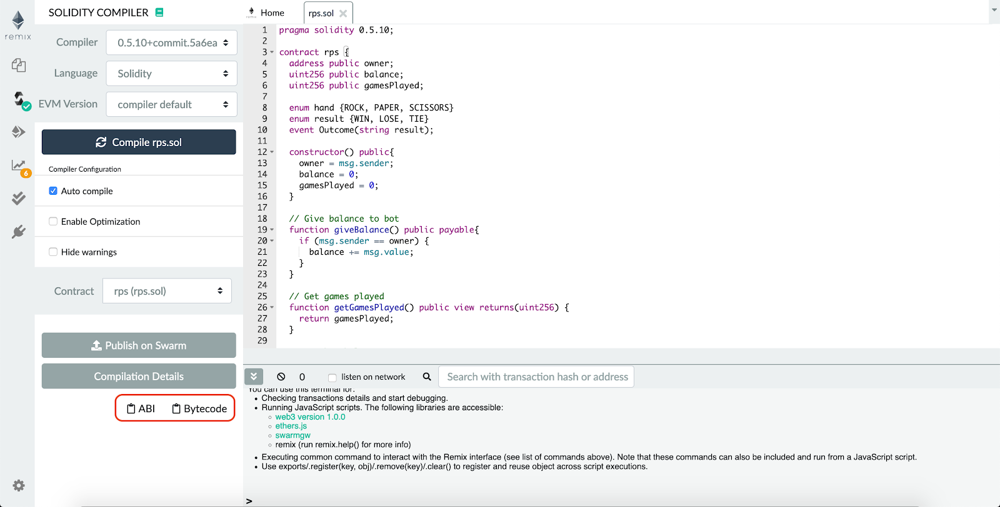
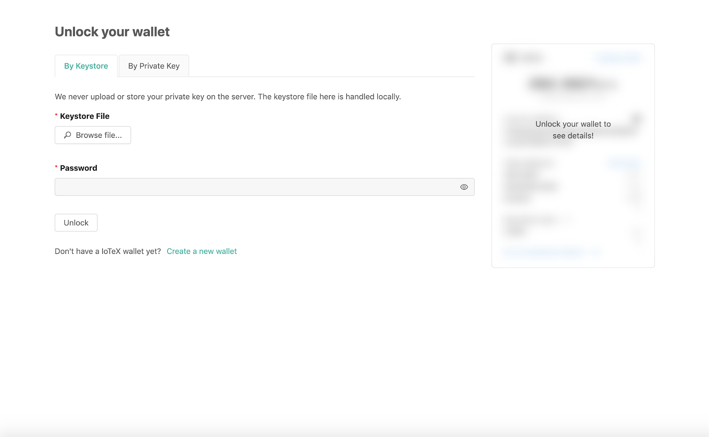
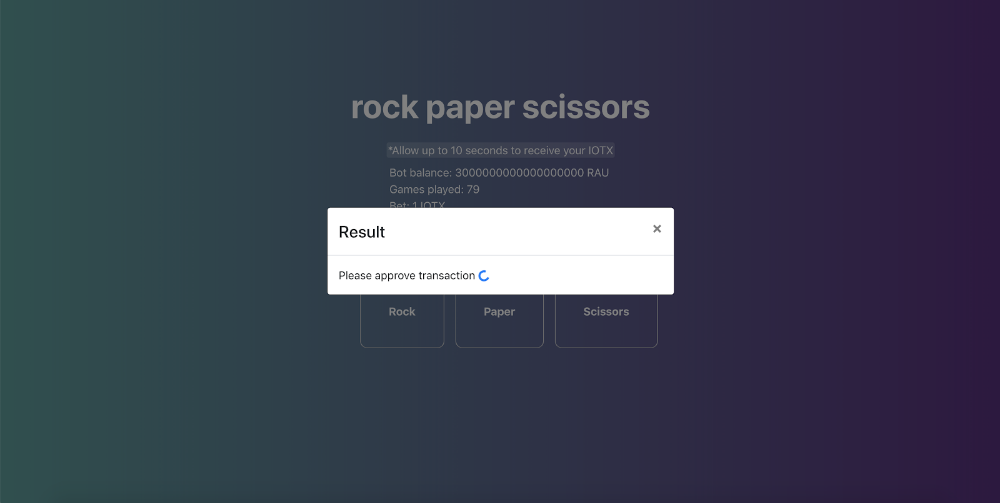
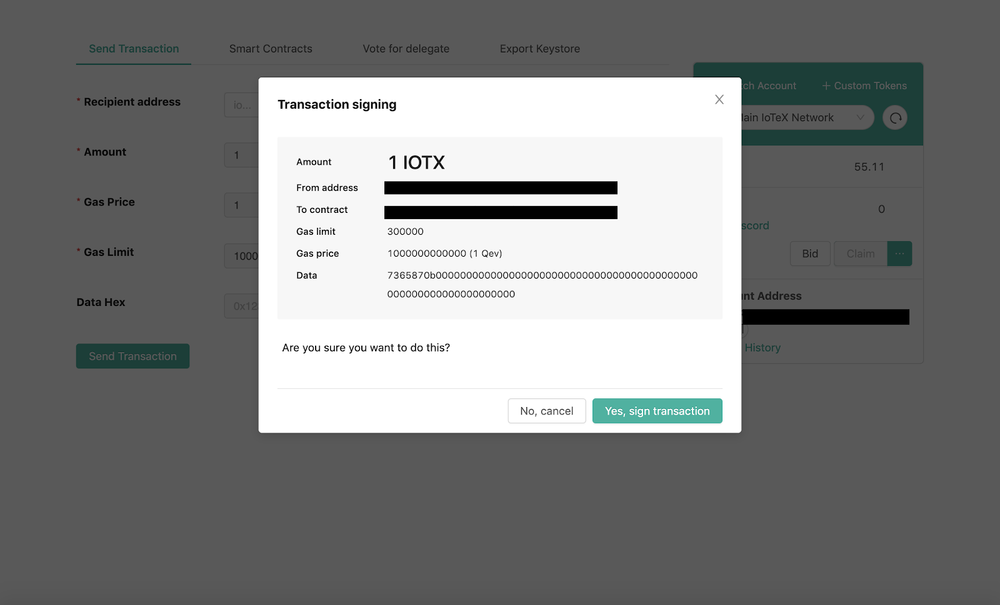
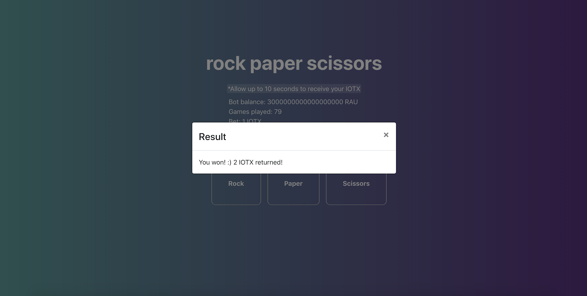

Last Updated: 2019-08-12
This codelab serves as an example of how to use the Antenna SDK in building a simple fullstack rock-paper-scissors betting DApp. We will go through the process step-by-step: building the smart contract backend, then building the Antenna SDK based frontend with React.

The Antenna SDK uses gRPC or gRPC-web connection to allow users to interact with local or remote blockchain nodes. This allows you to interact with smart contracts and get data from the blockchain.
To begin, let's think about how our bot will function. Our bot will play rock-paper-scissors against other players for us. The user will bet 1 IOTX to play against the bot and choose a hand: rock, paper, or scissors. The bot will then generate a random hand and the result of the game will be calculated.
Here are the different outcomes
Now that we have a working idea for our bot, let's begin!
Since we will be building our DApp using React, we will be using Create-React-App to bootstrap our DApp. We will call our project rps (rock-paper-scissors).
$ npx create-react-app rps
Create-React-App automatically configures webpack and babel for us for ease of development!
Now create a folder to house our smart contracts:
$ cd rps $ mkdir contracts
We will be using iotex-antenna sdk to interact with our deployed smart contract.
Inside our rps folder:
$ npm install iotex-antenna
Install sleep-promise (which we will use to wait for the next block):
$ npm install sleep-promise
Install react-bootstrap (which we will use to easily beautify our dapp):
$ npm install react-bootstrap bootstrap
We will use IoPay-Desktop to handle the account authorization when we interact with our rock-paper-scissors smart contract.
Download IoPay-Desktop here
To begin, we must create the backend for our rock paper scissors game. This will be in the form of a smart contract running on the blockchain.
Create a new file called rps.sol and open it in the editor of your choice
Here is the entire finished backend smart contract as reference (We will go through each portion individually):
pragma solidity 0.5.10;
contract rps {
address public owner;
uint256 public balance;
uint256 public gamesPlayed;
string public lastResult;
enum hand {ROCK, PAPER, SCISSORS}
enum result {WIN, LOSE, TIE}
constructor() public payable{
owner = msg.sender;
balance = msg.value;
gamesPlayed = 0;
lastResult = "";
}
// Give balance to bot
function giveBalance() public payable{
if (msg.sender == owner) {
balance += msg.value;
}
}
// Withdraw from bot
function withdraw(uint256 amount) public {
require(balance >= amount, "Balance too low");
if (msg.sender == owner) {
msg.sender.transfer(amount);
balance -= amount;
}
}
// Bet choice
function bet(uint256 choice) public payable{
require(choice >= 0 && choice <= 2, "Choose a valid rps");
require(balance >= 1, "Bot balance too low");
require(msg.value >= 1, "Bet 1 IOTX");
balance += msg.value;
hand playerHand = convertHand(choice);
hand botHand = generateHand();
result res = determineWin(botHand, playerHand);
setLastResult(res);
distReward(res);
}
//Return result in string form
function resultToString(result res) public pure returns(string memory) {
if (res == result.WIN) {
return "You won! :) 2 IOTX returned!";
}
if (res == result.LOSE) {
return "You lose :( 0 IOTX for you";
}
if (res == result.TIE) {
return "You tied! :O 1 IOTX returned!";
}
return "";
}
// Convert int to hand
function convertHand(uint256 choice) public pure returns(hand){
if (choice == 0) {
return hand.ROCK;
}
if (choice == 1) {
return hand.PAPER;
}
if (choice == 2) {
return hand.SCISSORS;
}
}
// Get a random hand
function generateHand() public view returns(hand){
// uint8 rand = uint8(uint256(keccak256(block.timestamp))%3 + 1);
uint rand = uint(keccak256(abi.encodePacked(block.timestamp, msg.sender))) % 3;
if (rand == 0) {
return hand.ROCK;
}
if (rand == 1) {
return hand.PAPER;
}
if (rand == 2) {
return hand.SCISSORS;
}
}
// Emit outcome based on result for js display result
function setLastResult(result res) public {
if (res == result.TIE) {
lastResult = resultToString(res);
}
if (res == result.WIN) {
lastResult = resultToString(res);
}
if (res == result.LOSE) {
lastResult = resultToString(res);
}
}
// Determine winning
function determineWin(hand bot,hand player) public pure returns(result) {
// Check tie
if (bot == player) {
return result.TIE;
}
// Check win/lose
if (bot == hand.ROCK) {
if (player == hand.PAPER) {
return result.WIN;
} else {
return result.LOSE;
}
}
if (bot == hand.PAPER) {
if (player == hand.SCISSORS) {
return result.WIN;
} else {
return result.LOSE;
}
}
if (bot == hand.SCISSORS) {
if (player == hand.ROCK) {
return result.WIN;
} else {
return result.LOSE;
}
}
}
// Give off rewards based on result
function distReward(result res) public {
if (res == result.WIN) {
msg.sender.transfer(2*10**18);
balance -= 2*10**18;
} else if (res == result.TIE) {
msg.sender.transfer(10**18);
balance -= 10**18;
}
gamesPlayed++;
}
}
For our rps contract, we must create some global variables that will be needed to track our bot's progress and the frontend. For this example, we will keep track of the bot's balance, gamesplayed, owner, and last game result.
address public owner; // ioaddress of contract deployer
uint256 public balance; // balance of bot in RAU
uint256 public gamesPlayed; // # of games played
string public lastResult; // result of last gameWe also define some enumerables to help us more easily distinguish between different results and hands.
enum hand {ROCK, PAPER, SCISSORS}
enum result {WIN, LOSE, TIE}In the constructor, we instantiate these global variables to our starting values. Making our constructor
payable allows the contract deployer to add to the bot's balance on deployment. As such,
balance is set to msg.value.
constructor() public payable{
owner = msg.sender;
balance = msg.value;
gamesPlayed = 0;
lastResult = "";
}In order for our bot to be profitable, we need to add some functions that allow us to add balance to the bot and withdraw our earnings.
We define them through giveBalance and withdraw:
// Give balance to bot
function giveBalance() public payable{
if (msg.sender == owner) {
balance += msg.value;
}
}
// Withdraw from bot
function withdraw(uint256 amount) public {
require(balance >= amount, "Balance too low");
if (msg.sender == owner) {
msg.sender.transfer(amount);
balance -= amount;
}
}Bet will be our main function that the dapp with call after the player chooses a hand:
function bet(uint256 choice) public payable{
require(choice >= 0 && choice <= 2, "Choose a valid rps");
require(balance >= 1, "Bot balance too low");
require(msg.value >= 1, "Bet 1 IOTX");
balance += msg.value;
hand playerHand = convertHand(choice);
hand botHand = generateHand();
result res = determineWin(botHand, playerHand);
emitResult(res);
distReward(res);
}Bet takes in an integer between 0 and 2: 0 representing rock, 1 representing paper, and 2
representing scissors.
First, we must make some invariants are fulfilled using require statements.
require(choice >= 0 && choice <= 2, "Choose a valid rps");
require(balance >= 1, "Bot balance too low");
require(msg.value >= 1, "Bet 1 IOTX");These statements check if the choice is valid, if the bot has enough balance to play, and if the user bet 1 IOTX.
Subsequently, the integer is converted to a hand enum through convertHand() and then a random hand
is generated based on our random algorithm defined in generateHand().
function generateHand() public view returns(hand){
uint rand = uint(keccak256(abi.encodePacked(block.timestamp, msg.sender))) % 3;
if (rand == 0) {
return hand.ROCK;
}
if (rand == 1) {
return hand.PAPER;
}
if (rand == 2) {
return hand.SCISSORS;
}
}
I'm using a hash of block timestamp as a random number generator. Note that block timestamp is not the safest RNG, as it can be manipulated.
After getting the player's hand and the bot's hand, determineWin(botHand,
playerHand)returns a result enum with the result of the game.
function determineWin(hand bot,hand player) public pure returns(result) {
// Check tie
if (bot == player) {
return result.TIE;
}
// Check win/lose
if (bot == hand.ROCK) {
if (player == hand.PAPER) {
return result.WIN;
} else {
return result.LOSE;
}
}
if (bot == hand.PAPER) {
if (player == hand.SCISSORS) {
return result.WIN;
} else {
return result.LOSE;
}
}
if (bot == hand.SCISSORS) {
if (player == hand.ROCK) {
return result.WIN;
} else {
return result.LOSE;
}
}
}Finally, setLastResult(res) updates our lastResult variable and distReward(res) sends
the appropriate reward to the player based on the result of the match.
// Give rewards based on result
function distReward(result res) public {
if (res == result.WIN) {
msg.sender.transfer(2*10**18);
balance -= 2*10**18;
} else if (res == result.TIE) {
msg.sender.transfer(10**18);
balance -= 10**18;
}
gamesPlayed++;
}To deploy our contract, we will use iotexscan.io/wallet
First, use Remix to get our abi and bytecode.
Paste your contract into Ethereum's Remix IDE and select compile.
Afterwards, you should see two buttons on the bottom left, one called abi, and one called bytecode:

The bytecode will come in the form of:
{
"linkReferences": ...,
"object": "608932131312124....",,
"opcodes": ...,
"sourceMap": ...,
}The bytecode you copy down is what is inside object. In this example, 608932131312124...
Deploy your contract onto Mainnet or Testnet
Copy and paste your abi and bytecode and deploy.
Make sure you have enough IOTX to do so (around 1.5) and have set the gas limit high enough. If the deployment fails, increase the gas limit.
I used React to build my frontend, however you can use any framework or just javascript to do so. Here is the
full code for App.js (code explanation below):
import React from 'react';
import './App.css';
import { Modal, Spinner } from "react-bootstrap";
import abi from "./abi";
import Antenna from "iotex-antenna";
import { Contract } from "iotex-antenna/lib/contract/contract";
import { WsSignerPlugin } from 'iotex-antenna/lib/plugin/ws';
import { toRau } from 'iotex-antenna/lib/account/utils';
import sleep from 'sleep-promise';
class App extends React.Component {
contract;
antenna;
constructor(props) {
super(props)
this.antenna = new Antenna('http://api.iotex.one:80', {
signer: new WsSignerPlugin('wss://local.get-scatter.com:64102/'),
});
this.contract = new Contract(
abi,
"io188rcvluys2n2c5jnys8ry6jyen6qyq4hr8pymq",
{
provider: this.antenna.iotx,
signer: this.antenna.iotx.signer
}
);
this.state = {
balance: 0,
games: 0,
result: "Waiting for next block",
showResult: false,
loading: true
}
}
componentDidMount() {
this.updateState();
setInterval(this.updateState.bind(this), 10e3)
}
async updateState() {
let balance = await this.contract.methods.balance(
{
account: { address: this.antenna.iotx.accounts[0] },
gasLimit: "300000",
gasPrice: "1000000000000"
}
);
let games = await this.contract.methods.gamesPlayed(
{
account: { address: this.antenna.iotx.accounts[0] },
gasLimit: "300000",
gasPrice: "1000000000000"
}
);
this.setState({
balance: balance,
games: games
});
}
async betHand(hand) {
let blockHeight = (await this.antenna.iotx.getChainMeta()).chainMeta.height;
while (true) {
let newBlockHeight = (await this.antenna.iotx.getChainMeta()).chainMeta.height;
if (newBlockHeight > blockHeight) {
break;
}
await sleep(1000);
}
this.setState({
result: "Please approve transaction"
});
await this.contract.methods.bet(hand,
{
amount: toRau(1, "IOTX"),
account: { address: this.antenna.iotx.accounts[0] },
gasLimit: "300000",
gasPrice: "1000000000000"
});
let result = await this.contract.methods.lastResult(
{
account: { address: this.antenna.iotx.accounts[0] },
gasLimit: "300000",
gasPrice: "1000000000000"
}
);
this.setState({
result: result,
loading: false
})
this.updateState();
}
showModal() {
this.setState({ showResult: true });
}
closeModal() {
this.setState({ showResult: false });
}
clearResult() {
this.setState({ result: "Waiting for next block", loading: true });
}
render() {
return (
<div className="main-container" >
<link
rel="stylesheet"
href="https://maxcdn.bootstrapcdn.com/bootstrap/4.3.1/css/bootstrap.min.css"
integrity="sha384-ggOyR0iXCbMQv3Xipma34MD+dH/1fQ784/j6cY/iJTQUOhcWr7x9JvoRxT2MZw1T"
crossOrigin="anonymous"
/>
<div id="title">
rock paper scissors
</div>
<div id="data">
<span>*Allow up to 10 seconds to receive your IOTX</span>
<p>
Bot balance: {this.state.balance.toString()} RAU <br></br>
Games played: {this.state.games.toString()}<br></br>Bet: 1 IOTX<br></br>
</p>
</div>
<div id="choose">Choose your hand</div>
<ul>
<button className="rpsButton" onClick={() => { this.showModal(); this.betHand(0); }}>Rock</button>
<button className="rpsButton" onClick={() => { this.showModal(); this.betHand(1); }}>Paper</button>
<button className="rpsButton" onClick={() => { this.showModal(); this.betHand(2); }}>Scissors</button>
</ul>
<Modal
size="larW"
aria-labelledby="contained-modal-title-vcenter"
centered show={this.state.showResult} onHide={() => { this.closeModal(); this.clearResult() }}>
<Modal.Header closeButton>
<Modal.Title>Result</Modal.Title>
</Modal.Header>
<Modal.Body>
{this.state.result + " "}
{(() => {
if (this.state.loading) {
console.log("show spin");
return <Spinner animation="border" variant="primary" size="sm" />
}
})()}
</Modal.Body>
</Modal>
</div >
)
}
}
export default App;In our constructor, we instantiate the Antenna and provide an endpoint to mainnet alpha. We also link the Antenna to our wallet signer plugin and create a new Contract object using our abi.
this.antenna = new Antenna('http://api.iotex.one:80', {
signer: new WsSignerPlugin('wss://local.get-scatter.com:64102/'),
});We then create a Contract object which will allow us to call methods we defined in our smart
contract.
this.contract = new Contract(
abi,
"io188rcvluys2n2c5jnys8ry6jyen6qyq4hr8pymq",
{
provider: this.antenna.iotx,
signer: this.antenna.iotx.signer
}
);We also define our React component's state, which contains the current balance of the bot, total number of games played, the result of each match, and a few other variables used for interacting with react bootstrap.
this.state = {
balance: 0,
games: 0,
result: "Waiting for next block",
showResult: false,
loading: true
}When the component mounts, we update the state and set an interval to call updateState for us,
which will update our bot balance and games played every 3 seconds:
componentDidMount() {
this.updateState();
setInterval(this.updateState.bind(this), 10e3)
}In updateState, we update the state's balance and games variables
with the current values that we get from our contract. We get these values through calling the contract methods
for getting public variables. this.antenna.iotx.accounts[0] gets the address of the current user
signed into the desktop wallet :
async updateState() {
let balance = await this.contract.methods.balance(
{
account: { address: this.antenna.iotx.accounts[0]
},
gasLimit: "300000",
gasPrice: "1000000000000"
}
);
let games = await this.contract.methods.gamesPlayed(
{
account: { address: this.antenna.iotx.accounts[0]},
gasLimit: "300000",
gasPrice: "1000000000000"
}
);
this.setState({
balance: balance,
games: games
});
}This is then displayed in our render function:
<p>
Bot balance: {this.state.balance.toString()} RAU <br></br>
Games played: {this.state.games.toString()}<br></br>Bet: 1
IOTX<br></br>
</p>The main functionality of the game comes through the betHand method.
After the player selects a hand, we wait for the next block to be produced before calculating our random number to increase unpredictability:
let blockHeight = (await this.antenna.iotx.getChainMeta()).chainMeta.height;
while (true) {
let newBlockHeight = (await this.antenna.iotx.getChainMeta()).chainMeta.height;
if (newBlockHeight > blockHeight) {
break;
}
await sleep(1000);
}We then call the bet method defined in our contract and update the result in state accordingly.
The bet method that we defined earlier in our contract contains all the logic for operating our
rock paper scissors game, so that's all we need to do!:
await this.contract.methods.bet(hand,
{
amount: toRau(1, "IOTX"),
account: { address: this.antenna.iotx.accounts[0]},
gasLimit: "300000",
gasPrice: "1000000000000"
});
let result = await this.contract.methods.lastResult(
{
account: { address: this.antenna.iotx.accounts[0]},
gasLimit: "300000",
gasPrice: "1000000000000"
}
);
this.setState({
result: result,
loading: false
})
We attach the betHand method to the rock, paper, and scissors buttons in our render
function:
<ul>
<button className="rpsButton" onClick={() => { this.showModal(); this.betHand(0); }}>Rock</button>
<button className="rpsButton" onClick={() => { this.showModal(); this.betHand(1); }}>Paper</button>
<button className="rpsButton" onClick={() => { this.showModal(); this.betHand(2); }}>Scissors</button>
</ul>CSS styling in App.css to make our app look nice:
.rpsButton {
padding: 40px;
margin-right: 5px;
border-radius: 10px;
font-weight: bold;
cursor: pointer;
background: none;
margin-top: 1.2em;
color: white;
margin-right: 1em;
}
.rpsButton:focus {
outline: none;
}
#choose {
margin-top: 10px;
font-weight: 500;
font-size: 1.1em;
margin-bottom: 10px;
}
#title {
margin-top: 100px;
font-weight: bold;
position: relative;
/* margin: auto; */
font-size: 3em;
}
#data {
margin-top: 1em;
margin-bottom: 2em;
}
#data p {
position: relative;
width: 20em;
text-align: left;
margin: auto;
margin-top: 0.5em;
}
#data span {
position: relative;
padding: 2px;
background: rgba(255, 255, 255, 0.151);
border-radius: 3px;
}
ul {
display: inline-block;
flex-direction: row;
margin: auto;
}
.rpsButton:hover {
background: rgba(0, 0, 0, 0.1);
}
modal {
background: none;
}
button:active {
opacity: 0.7;
}
.main-container {
padding: 20px;
color: white;
position: relative;
text-align: center;
}
body {
min-height: 100vh;
background: #5f2c82;
/* fallback for old browsers */
background: -webkit-linear-gradient(to right, #49a09d, #5f2c82);
/* Chrome 10-25, Safari 5.1-6 */
background: linear-gradient(to right, #49a09d, #5f2c82);
/* W3C, IE 10+/ Edge, Firefox 16+, Chrome 26+, Opera 12+, Safari 7+ */
color: white;
}
.center {
margin: auto;
}In our frontend, we created a WsSigner object that will listen to the port created by our IoPay
desktop wallet.
Open the IoPay desktop wallet we installed earlier and sign in to your account. This will create a server that antenna will listen to, allowing us to authorize contract signing.

Go to the root of our rps folder and run our app:
$ npm start
It should start a server at localhost:3000/ and you should see something like this:
Make sure you have your desktop wallet open and select a hand: Rock, Paper, or Scissors
It will show waiting for next-block and then please approve transaction:

You should see a popup in your iotex wallet and select Yes, sign transaction:

After approving, the result of your game should be shown!

Congratulations, you now have a fully functional rock, paper, scissors bot! Thanks for reading!